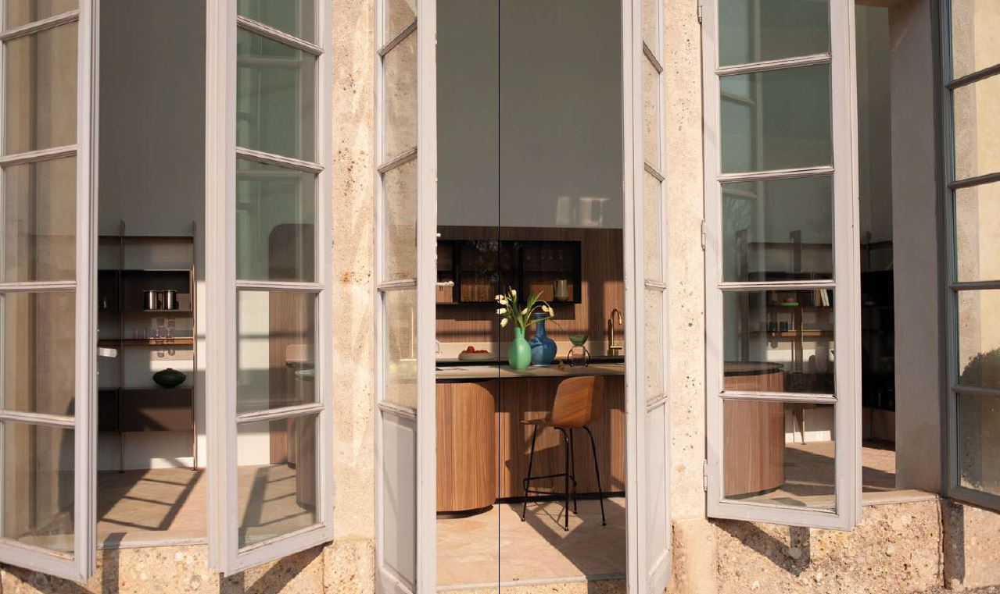
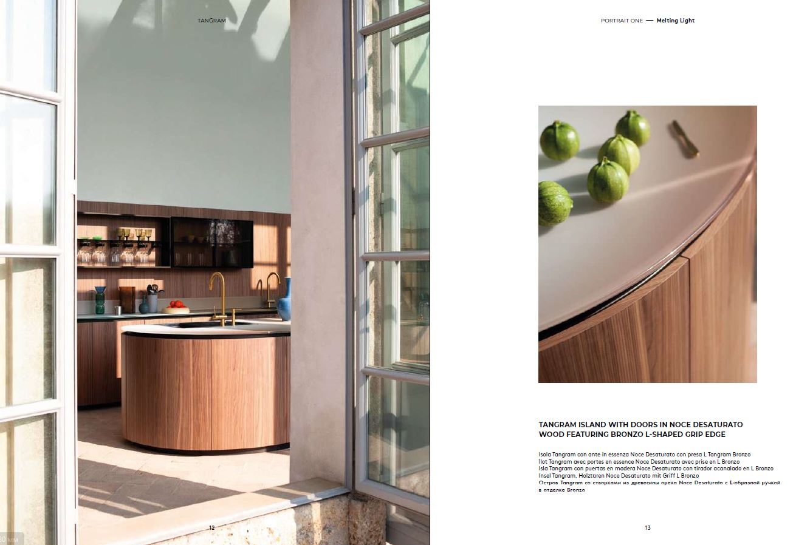
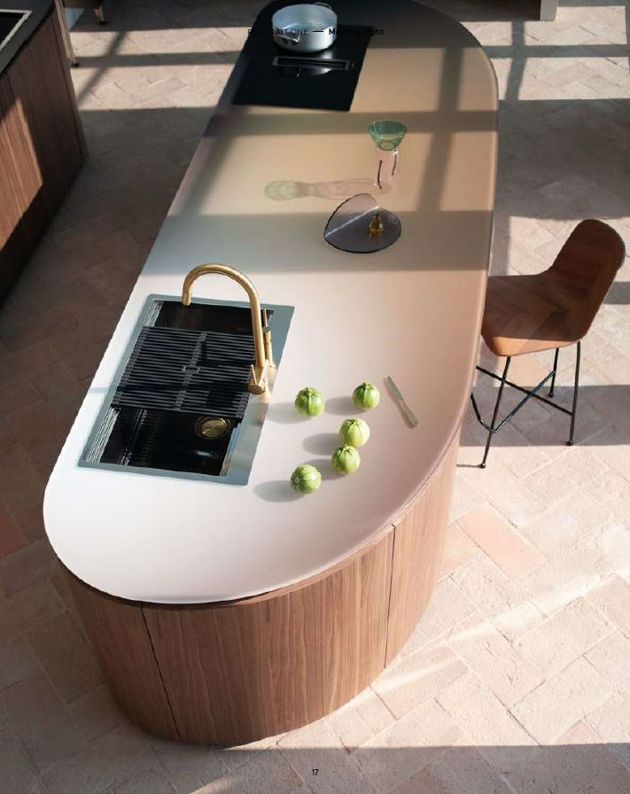
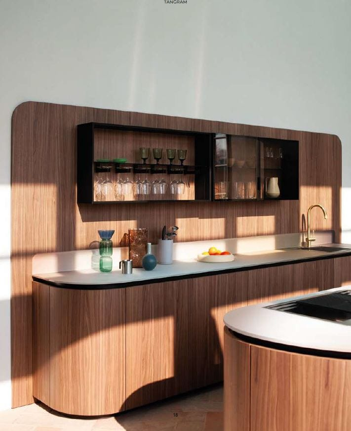
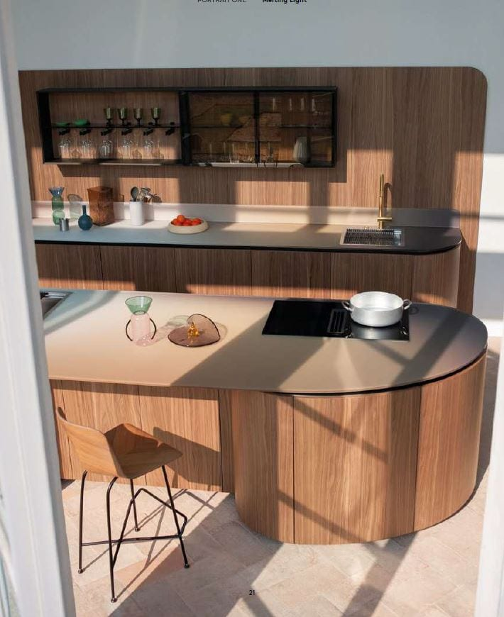
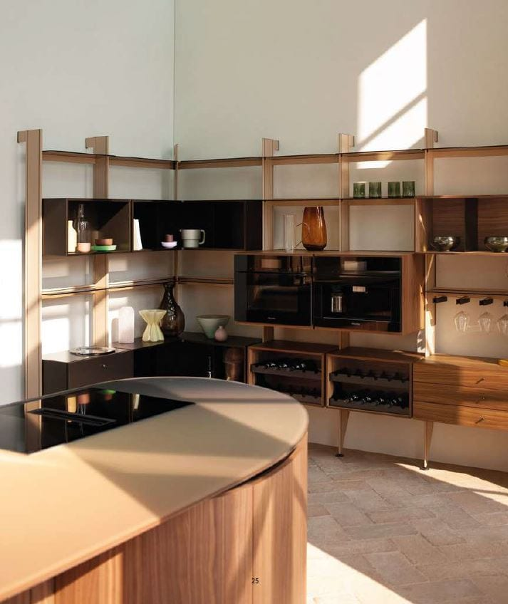
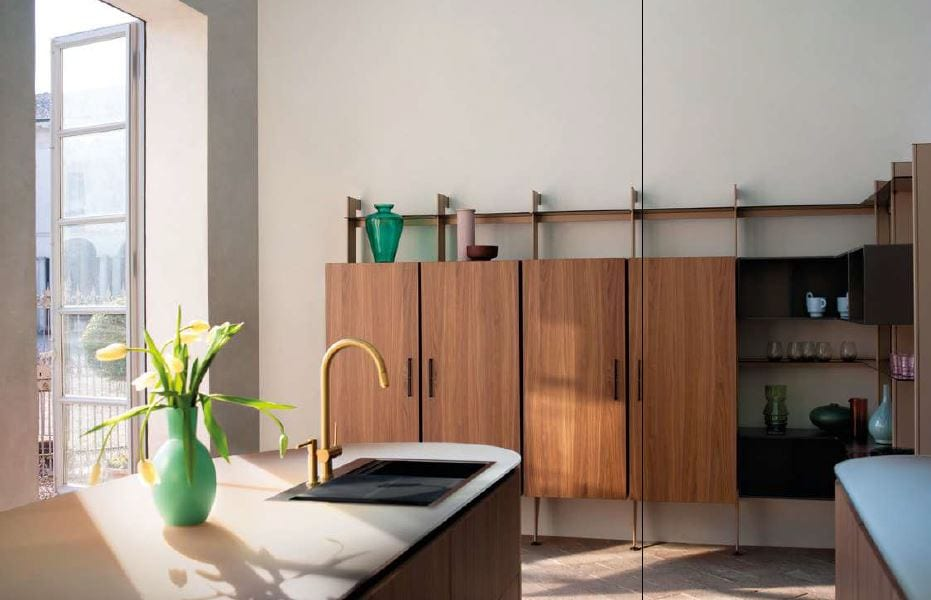
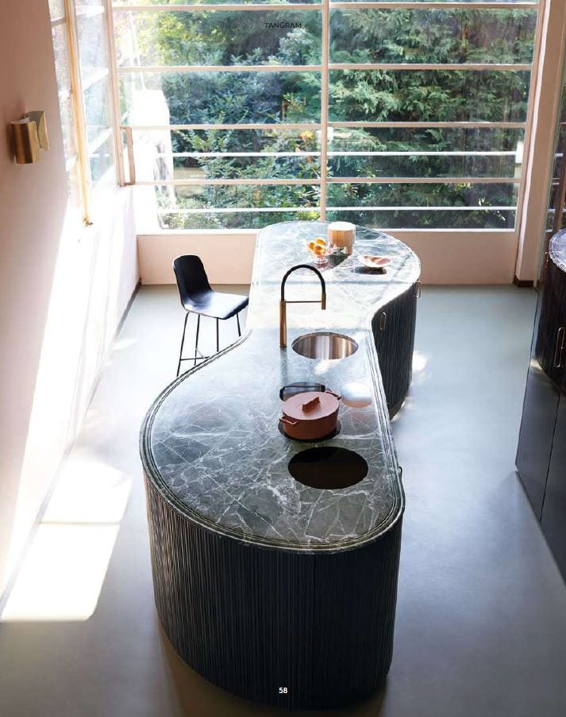
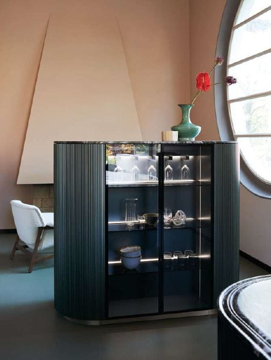

Tangram
Design by García Cumini
Tangram состоит из пяти изогнутых элементов, которые можно комбинировать с прямыми элементами по желанию, создавая кухонные острова необычных форм, композиции у стены или даже решения, обвивающие углы.
Чтобы подчеркнуть плавность линий Tangram, дверцы шкафов по запросу могут быть украшены специальным декоративным элементом: трёхмерным элементом под названием Groove, состоящим из последовательности вертикальных надрезов, скрывающих стыки между модулями.
Неправильный контур, чередование полных и пустых пространств, а также игра света и тени скрывают проёмы дверей, создавая единое и цельное восприятие композиции.


Студия García Cumini родилась из встречи двух культур — итальянской и испанской, где творчество, красота и радость жизни являются фундаментальными ценностями. Основанная в 2012 году Висенте Гарсиа Хименесом и Чинцией Кумини, студия объединила два взаимодополняющих характера — в работе и в жизни. Философия Slow Design определяет целостный подход к проектированию: глубокое изучение образа жизни будущих владельцев и внимание к производственным процессам. Результат — формы и объекты, созданные на долгий срок, сохраняющие баланс между эмоцией и функцией, искусством и технологией.



Animated
Дома обретают характер своих хозяев — замкнутый и сдержанный или открытый для гостей и друзей.
Само собой, именно в последних всегда чувствуешь себя желанным гостем.



